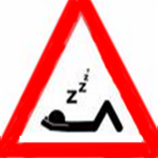

Vaguismo
 De: La Frikipedia, la enciclopedia extremadamente seria.
De: La Frikipedia, la enciclopedia extremadamente seria.
| De la serie religiones del mundo:
|
| Vaguismo
|
| 
|
| Señal internacional de los vagos
|
|
| Creador
|
Jonatan
|
| Profeta
|
IP anónima
|
| Número de creyentes
|
129239824 elevado a pi seres vivos, millón arriba, millón abajo
|
| Dogmas fundamentales
|
Léelos en este mismo artículo
|
| No se puede...
|
Mear de pie, trabajar, hacer una sola cosa que no sea descanasar diez minutos seguidos
|
| Sí se debe...
|
Descansar, tomarte vacaciones(que el descanso cansa) y tras las vacaciones seguir descansando
|
| Promesas principales
|
Una vida sana y placentera
|
| Nivel de frikismo
|
13,56%
|
| Máximo exponente
|
El Vago
|
El vaguismo es una religión (secta según algunos) surgida en 2005 por un grupo de mentes transtornadas y nada inteligentes. Es monoteísta (su único Dios se denomina Jonatan, aunque la CIA asegura que no existe) y defiende principalmente la teoría de que el trabajo es para otros. Defiende también el culto a los sofás, camas y semejantes. Dormir es la principal actividad de sus miembros: "Vago que duerme, dos veces vago"
Los 10 Mandamientos
- Se nace cansado y se vive para descansar.
- Ama a tu cama como a ti mismo.
- Descansa de día y duerme de noche.
- Si ves a alguien descansando, ayúdale.
- El trabajo es sagrado, no lo toques.
- Lo que puedas hacer mañana, no lo hagas hoy.
- Si tienes algo que hacer, deja que lo haga otro.
- Por demasiado descanso no se ha muerto nadie.
- Si tienes ganas de trabajar, siéntate hasta que se te pasen.
- Si el trabajo es salud, viva la tuberculosis.
NOTA: Para más comodidad, siéntate y que te los lea otro.
Algunos nada rigurosos estudios científicos aseguran que, para un tío, mear de pie es pecado. Si se quiere ser un buen vago, hay que mear sentado como las tías para no cansarte.
Características del vaguismo
- Rezar, comer o incluso trabajar están permitidos siempre que el creyente esté tumbado o su silla sea cómoda.
- Los bienes materiales están recomendados.
- La guerra santa solo en caso de que la culpa se la lleve otro.
- Los tres Deportes Divinos son: squash, ajedrez y baloncesto. Practícalos para ser mejor que el otro.
- Todo creyente tiene el derecho al suicidio. Todo no creyente tiene el deber de suicidarse.
- Dale a Dios tu pan de cada día.
- Existe un templo, pero está en Word.
- Dios se manifiesta a través de sus formas mortales (Jonatan, un vegetal...) y a través de su máquina de rayos.
- Todo lo que pienses puede ser utilizado en tu contra en el juicio final. No pienses.
- Suelen poseer una silla en la que pasan la mayor parte de su vida sentados... Es por ello que está marcada perfectamente la silueta del culo que se pone sobre ella, lo que demuestra la teoria de la Simbiosis entre el Vago y la propia silla... Segun el hundimiento de ella, se considerará su nivel de Vaguería
Enlaces externos
Autor(es):
- Doctor grijander
- Epikurolibre
- Cibercrank
- Veni Vidi Vici
- Dark temptation
- Syk
- Habbiton
- Finalcraneo
- 62666
- Naco
Frikipedia 2005-2016, Licencia
GFDL 1.2 - Extraído por FrikiLeaks